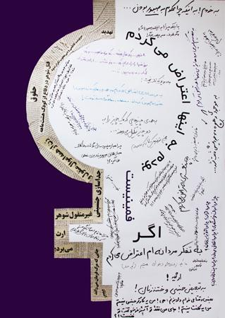
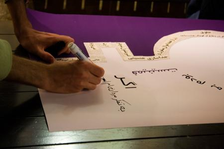
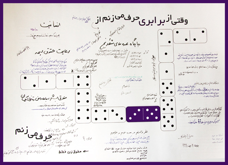

|
|

هشت مارس ساده ما
تجربه کمیته هنری کمپین در برخورد با مخاطب
دو شنبه24 اسفند 1388
دو سال و چند ماهی می گذرد از آن روز که پنج شش نفری دور هم نشستیم و گفتیم که خب! امضا جمع کردن خوب است و روش چهره به چهره عالی است و برای پیش رفتن باید از قلب جمعیت گذشت و ...., اما دیگر چه؟ دو سال و چند ماه است که این پرسش مفید و مختصر شد دغدغه مان, شاید هم شد نقطه اشتراکمان!
بعد از آن بود که بحث ها و تئوریها و کتاب و جزوه های دانشگاهیمان و سواد شخصیمان و خلاقیتهای گاه گاهیمان و توانایی های –هرچند- اندکمان را به کار گرفتیم و بحث هنر در کنار فعالیت اجتماعی یا هنر اعتراضی یا هنر اجتماعی یا هر اسمی که دوست دارید برایش بگذارید را وسط کشیدیم. که معنیش هم بسیار ساده است: هنر ما خود زندگی ماست و زندگی ما از اعتراضمان نسبت به شرایط اجتماعی و تبعیض های موجود بر اساس جنسیتیمان جدا نیست.
نتیجه همه این حرفها را در طراحی لوگوها و پین ها, تئاترهای خیابانی, استیکرها, سرود, فتوبلاگ و مقاله های منتشر شده در وب سایت کمپین به عمل درآوردیم و این بار, به مناسبت هشت مارس, با طراحی پوستر های اشتراکی یا تعاملی (Interactive) – باز هر اسمی دوست دارید به آنها بدهید – به خیابانهای شهرمان رفتیم. این پوسترها به سادگی عبارتی را با مخاطب مطرح می کند و بر اساس پاسخ یا عکس العمل او به تدریج تکمیل می شود. تجربه این پوسترها آنجا به ایده های ما نزدیک می شوند که نه تنها هنر را به خیابانها می برند بلکه از آدمها می خواهند به منظور شکل دادن اثر هنری به مفهومی فکر کنند که شاید کمتر فرصت اندیشیدن به آن را در خلال روزهای زندگی به دست آورند. در واقع مخاطب را در دو زمینه شکل و محتوا درگیر می کنند.

در برخورد با مخاطبان, اگرچه مانند تجربیات گذشته مان بارها با "چه فایده" ها, "که چی بشود" ها, "خطر نداشته باشد"ها و این بار "همه را که گرفته اند"ها مواجه شدیم اما اکثر آدمها از اینکه نظر و عقیده خود را در جایی ثبت کنند استقبال کردند. بعضی ها مجبور بودند برای خلاصه کردن مفهوم برابری در یک جمله (یا کلمه) مدتها فکر کنند و از اینکه مدتهاست به این عبارت حتی فکر نکرده اند ابراز تعجب می کردند. از یک نفر شنیدیم "باید مثنوی بنویسم" و از دیگری "مشکل فرهنگ ماست". یکی به "چندهمسری" اعتراض داشت و دیگری به "زن بودنش"! یکی معتقد بود "مردها هم باید روز جهانی داشته باشند" و دوستش هم اصرار داشت که "مردها همه روزهای سال را تصرف کرده اند"!

تجربه شیرین در کنار مخاطب ایستادن جشن ساده امسال ما بود برای هشت مارس روز جهانی زن و شکل اعتراض ما به نبودنمان در خیابانهای شهری که مال ماست؛ و به رخ کشیدن توان ما برای حضور –هر چند کمرنگ – در فضای عمومی و رساندن پیاممان به آدمهایی که معتقدیم برابری را می شناسند اگرچه گاه یادشان می رود به آن فکر کنند.
